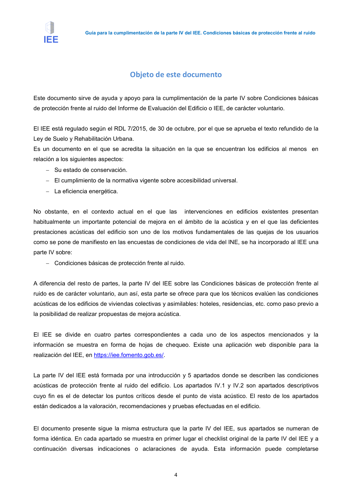
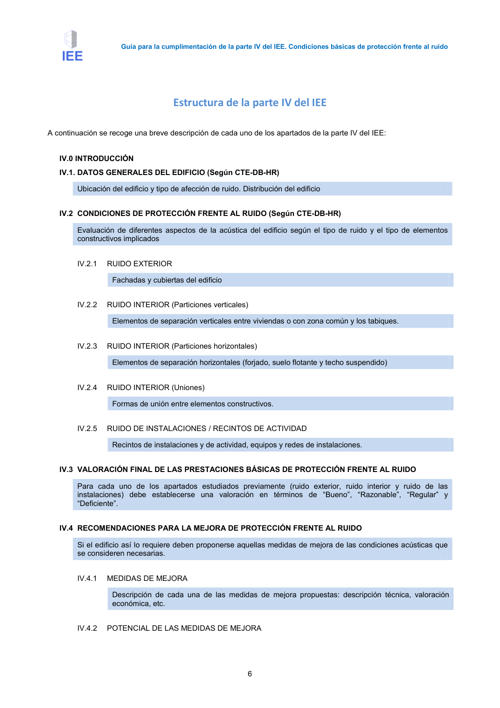

GUIA · Objeto de este documento · versión 2016-11-01 · capa guia
Formatos: JSON compacto · Markdown · PDF fuente
Ámbito del documento · texto del ámbito · documento y tablas
Tipo: referencias, tablas, figuras · nivel 3 · sección estimada: Anejo 3. Valoración del aislamiento acústico de elementos de separación horizontales y sus mejoras · padre: a0003
Objeto de este documento Este documento sirve de ayuda y apoyo para la cumplimentación de la parte IV sobre Condiciones básicas de protección frente al ruido del Informe de Evaluación del Edificio o IEE, de carácter voluntario. El IEE está regulado según el RDL 7/2015, de 30 de octubre, por el que se aprueba el texto refundido de la Ley de Suelo y Rehabilitación Urbana. Es un documento en el que se acredita la situación en la que se encuentran los edificios al menosen relación a los siguientes aspectos: − Su estado de conservación. − El cumplimiento de la normativa vigente sobre accesibilidad universal. − La eficiencia energética. No obstante, en el contexto actual en el que las intervenciones en edificios existentes presentan habitualmente un importante potencial de mejora en el ámbito de la acústica y en el que las deficientes prestaciones acústicas del edificio son uno de los motivos fundamentales de las quejas de los usuarios como se pone de manifiesto en las encuestas de condiciones de vida del INE, se ha incorporado al IEE una parte IV sobre: − Condiciones básicas de protección frente al ruido. A diferencia del resto de partes, la parte IV del IEE sobre las Condiciones básicas de protección frente al ruido es de carácter voluntario, aun así, esta parte se ofrece para que los técnicos evalúen las condiciones acústicas de los edificios de viviendas colectivas y asimilables: hoteles, residencias, etc. como paso previo a la posibilidad de realizar propuestas de mejora acústica. El IEE se divide en cuatro partes correspondientes a cada uno de los aspectos mencionados y la información se muestra en forma de hojas de chequeo. Existe una aplicación web disponible para la realización del IEE, en https://iee.fomento.gob.es/. La parte IV del IEE está formada por una introducción y 5 apartados donde se describen las condiciones acústicas de protección frente al ruido del edificio. Los apartados IV.1 y IV.2 son apartados descriptivos cuyo fin es el de detectar los puntos críticos desde el punto de vista acústico. El resto de los apartados están dedicados a la valoración, recomendaciones y pruebas efectuadas en el edificio. El documento presente sigue la misma estructura que la parte IV del IEE, sus apartados se numeran de forma idéntica. En cada apartado se muestra en primer lugar el checklist original de la parte IV del IEE y a continuación diversas indicaciones o aclaraciones de ayuda. Esta información puede completarse Guía para la cumplimentación de la parte IV del IEE. Condiciones básicas de protección frente al ruido 5 consultando otros documentos de apoyo desarrollados para la aplicación del DB HR, como la Guía de Aplicación del DB HR o el Catálogo de Elementos Constructivos del CTE. Este documento debe leerse conjuntamente con el IEE, que se recoge de forma íntegra en el Anejo 1. Guía para la cumplimentación de la parte IV del IEE. Condiciones básicas de protección frente al ruido 6


PDF fuente redistribuible: copia fiel enlazada en esta página (SHA256 verificado).